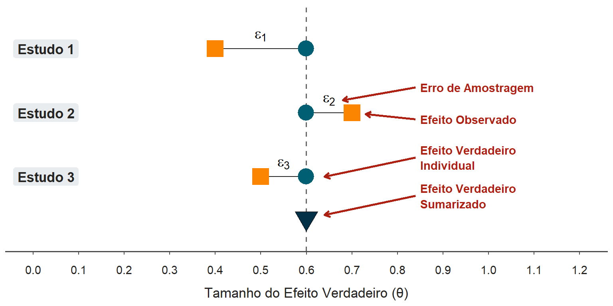
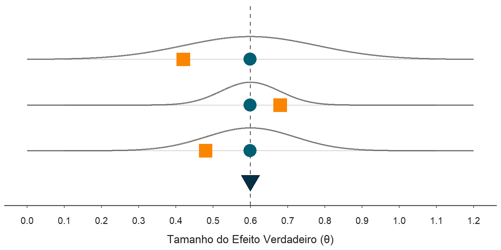
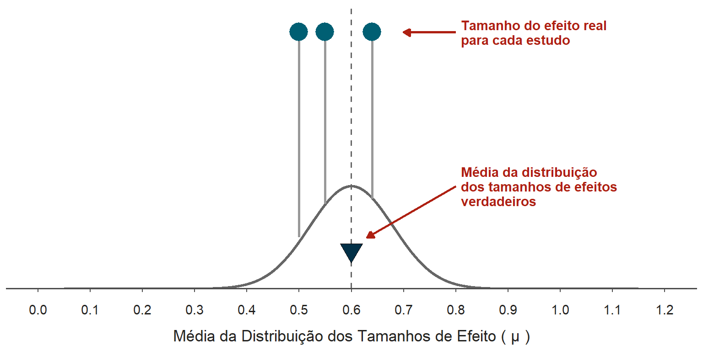
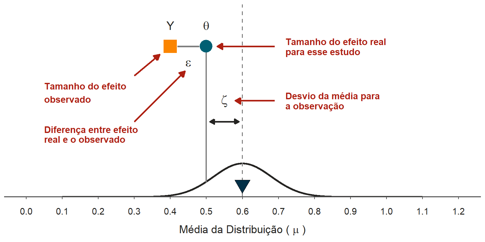
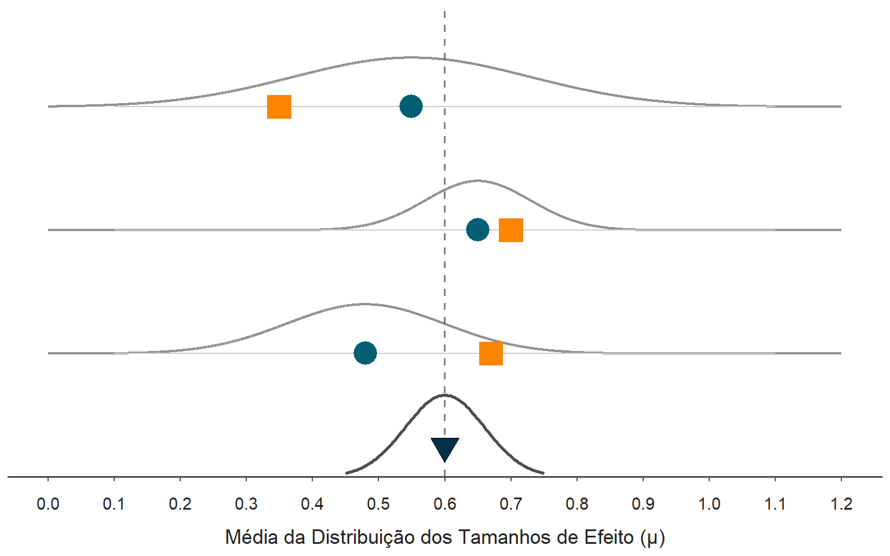

Uma introdução prática tamanho de Efeitos para metanálise em R.
Na estatística, um modelo funciona como uma “teoria” ou uma “imitação da vida”, utilizando fórmulas matemáticas para descrever processos do mundo real de forma idealizada. No contexto da metanálise, o modelo visa iluminar a “caixa-preta” que gera nossos dados, explicando os mecanismos pelos quais os tamanhos de efeito observados foram produzidos. O objetivo central é encontrar uma representação matemática que explique como podemos encontrar o efeito real subjacente a todos os estudos, mesmo quando os resultados individuais variam entre si. Assim, a especificação do modelo é o que permite interpretar as razões pelas quais os resultados dos estudos diferem e como eles podem ser combinados em um valor numérico único. E existem duas formas de integração que serão abordadas a seguir: o modelo de efeitos fixos e o modelo de efeitos aleatórios.
O modelo de efeito fixo assume que todos os tamanhos de efeito provêm de uma única população homogênea, o que significa que todos os estudos compartilham o mesmo tamanho de efeito verdadeiro, denotado por \(\theta\). De acordo com este modelo, a única razão pela qual o efeito observado de um estudo (\(\hat{\theta}_k\)) desvia do valor real é o erro de amostragem (\(\epsilon_k\)), que ocorre porque cada estudo extrai apenas uma pequena amostra de uma população infinita. A relação matemática que descreve este processo é:
\[\hat{\theta}_k = \theta + \epsilon_k\]
Na figura a seguir são demostrados três estudos que tentaram medir um fenômeno de \(\theta = 0.6\). Porém, nenhum deles atingiu exatamente esse tamanho de efeito. No modelo de efeitos fixos acredita-se que isso é causado unicamente por erro da amostragem. Assim, o efeito verdadeiro de cada estudo é necessariamente igual ao efeito verdadeiro sumarizado!

Figure 1: Demonstração que em um modelo de efeitos fixos existe um tamanho de de efeito verdadeiro da população que acredita-se ser o mesmo para todos os estudos. Porém, devido ao erro amostral os estudos diferem desse tamanho amostral constante.
Neste cenário, estudos com amostras maiores possuem erros de amostragem menores e, portanto, maior precisão. Isso é representado por estudos que possuem uma curva normal de efeitos possíveis mais estreitas (curva do meio na figura 2). Para estudos com amostras menores, existe uma precisão menor de determinar o tamanho de efeito verdadeiro e isso é demostrado como uma curva normal mais larga.
Essa precisão (erro padrão) é de extrema importância para metanálise. Isso porque a precisão de cada estudo atribui a ele um peso específico, calculado pelo inverso da variância. Esse peso define o quão influente cada estudo será na análise final, garantindo que estimativas com menor erro de amostragem tenham um impacto proporcionalmente maior no resultado combinado. Matematicamente, isto é expresso através do cálculo do Peso Individual (\(W_i\)), que é o inverso da variância do estudo (\(V_{Y_i}\)):
\[W_{i} = \frac{1}{V_{Y_{i}}}\]
Uma vez determinados os pesos, a Síntese dos Efeitos (\(M\)), também conhecida como média ponderada, é calculada pela soma dos produtos de cada efeito individual pelo seu peso, dividida pela soma total dos pesos:
\[M = \frac{\sum_{i=1}^{k} W_{i} Y_{i}}{\sum_{i=1}^{k} W_{i}}\]
Nesta fórmula, \(Y_i\) representa o tamanho do efeito observado no estudo \(i\), e \(k\) é o número total de estudos incluídos na metanálise. Esta abordagem garante que estudos com maior precisão (menor erro padrão) tenham um peso matematicamente superior na estimativa global.

Figure 2: Cada estudo tem um erro padrão diferente. Estudos com erros padrões maiores possuem curvas mais largas, mostrando que existe uma possibilidade maior de tamanho de efeitos observáveis. Estudos com erros padrões menores possuem curvas mais estreitas, mostrando que existem menos possibilidades de tamanho de efeitos observáveis.
Diferente do anterior, o modelo de efeitos aleatórios reconhece que os estudos raramente são perfeitamente homogêneos, pois podem variar em termos de composição amostral, intensidade da intervenção ou métodos de medição. Por exemplo, uma metanálise da eficácia de antidepressivos pode encontrar estudos com foco em idosos hospitalizados enquanto outro avalia adultos jovens ambulatoriais. Os estudos podem utilizar também dosagens distintas do medicamento ou até e escalas de avaliação variadas, como a de Hamilton ou a de Beck. Nesse cenário, fica claro que os estudos não estão medindo um efeito único, pois ou a população é diferente ou a intervenção é diferente. A solução é o modelo de efeitos aleatórios! Este modelo assume que existe uma distribuição de efeitos reais, e o objetivo da metanálise passa a ser a estimativa da média (\(\mu\)) dessa distribuição.
A variabilidade entre os tamanhos de efeitos reais é representada pelo parâmetro \(\tau^2\) (tau-quadrado). Na figura a seguir estão mostrados três estudos conduzidos que apresentam três tamanhos de efeitos reais diferentes. Essa largura do efeito possível na curva normal é o que é chamado de \(\tau^2\). Por exemplo, curva mais estreita apresenta menos efeitos reais possíveis e assim um \(\tau^2\) menor.

Figure 3: Em um modelo de efeitos aleatórios existe uma ampla possibilidade de tamanho de efeito real para cada estudo. Aqui são demonstrados 3 estudos com seus respectivos valores reais de tamanho de efeito. A média dos tamanhos de efeito verdadeiros não necessariamente coincide com o de cada estudo.
Porém, assim como no modelo de efeitos fixos, existe o erro amostral. Então, o valor observado de um estudo desvia da média global devido a dois componentes de erro: o desvio do estudo em relação à média da distribuição (\(\zeta_k\)) e o erro de amostragem individual (\(\epsilon_k\)). A fórmula que expressa esta hierarquia é:
\[\hat{\theta}_k = \mu + \zeta_k + \epsilon_k\]

Figure 4: Cada estudo mede um tamanho de efeito, que não é igual ao tamanho de efeito verdadeiro para esse estudo. Além disso, esse tamanho de efeito verdadeiro do estudo não necessariamente coincide com a gama de possibilidades de efeitos verdadeiros.
Agora juntando todos os conceitos percebemos que esse modelo funciona como a figura 3. Cada estudo tem sua precisão de um efeito real ligeiramente diferente 😊

Figure 5: Unindo as duas noções vemos o cenário completo.
Para estimar o efeito sumarizado no modelo de efeitos aleatórios, o desafio central reside na necessidade de contabilizar o erro \(\zeta_k\), o que exige a estimativa da variância da distribuição dos efeitos reais, parâmetro conhecido como \(\tau^2\). Uma vez que o valor de \(\tau^2\) é determinado, a heterogeneidade entre os estudos é incorporada ao cálculo do peso de cada observação, gerando um peso ajustado de efeitos randômicos (\(w^*_k\)) definido pela fórmula:
\[w^*_k = \frac{1}{s^2_k + \tau^2}\]
Com esses pesos ajustados, o tamanho do efeito sumarizado (\(\hat{\theta}\)) é calculado através do método do inverso da variância, de forma análoga ao modelo de efeito fixo, mas utilizando a nova ponderação que considera tanto o erro de amostragem individual quanto a variabilidade entre os estudos:
\[\hat{\theta} = \frac{\sum_{k=1}^{K} \hat{\theta}_k w^*_k}{\sum_{k=1}^{K} w^*_k}\]
Essa abordagem garante que a estimativa final reflita não apenas a precisão interna de cada estudo, mas também a dispersão real existente no “universo” de populações analisadas.
Este modelo é amplamente preferido em pesquisas médicas e sociais, pois assume a existência de heterogeneidade entre os estudos como uma representação mais fiel da realidade. E é por isso que nesse tutorial vamos detalhar como implementar ele em R.
Para isso vamos utilizar dois pacotes principais: meta e dmetar. Eles podem ser instalados com o seguinte código:
install.packages("meta")
if (!require("remotes")) {
install.packages("remotes")
}
remotes::install_github("MathiasHarrer/dmetar")metameanPara este exemplo, utilizaremos o dataset BdiScores. Ele contém a pontuação média do Inventário de Depressão de Beck II (BDI-II), coletada em amostras de pacientes deprimidos que participaram de ensaios clínicos de psicoterapia e antidepressivos. Nosso objetivo é calcular a pontuação média global de depressão entre todos esses estudos.
A função metamean utiliza o método genérico do inverso da variância para agrupar os dados. Antes de rodar o modelo, precisamos decidir sobre a transformação:
sm = "MRAW" (Médias Brutas): Utilizada na maioria dos casos, inclusive no nosso exemplo.
sm = "MLN" (Transformação Logarítmica): Recomendada para quantidades que não podem ser negativas (como altura) ou quando as médias estão muito próximas de zero.
method.tau: método de estimativa do \(\tau^2\). Existem vários métodos e não cabe agora nesse tutorial falar deles. Mas utilizando o padrão (“REML”) será um bom caminho.
Os argumentos essenciais são o tamanho da amostra (n), a média (mean) e o desvio padrão (sd). Além disso, vamos fazer um ajuste no intervalo de confiança através do método Knapp-Hartung pelo argumento method.random.ci = "HK".
library(dmetar)
library(meta)
library(tidyverse)
# Carregar os dados
data(BdiScores)
# Executar a metanálise de médias
m.mean <- metamean(n = n,
mean = mean,
sd = sd,
studlab = author,
data = BdiScores,
sm = "MRAW", # Médias não transformadas
common = FALSE,
random = TRUE,
method.tau = "REML",
method.random.ci = "HK",
title = "BDI-II Scores")
# Ver o resumo dos resultados
summary(m.mean)Review: BDI-II Scores
mean 95%-CI %W(random)
DeRubeis, 2005 32.6000 [31.2268; 33.9732] 18.0
Dimidjian, 2006 31.9000 [30.6955; 33.1045] 19.4
Dozois, 2009 28.6000 [25.7993; 31.4007] 9.1
Lesperance, 2007 30.3000 [28.8033; 31.7967] 17.0
McBride, 2007 31.9000 [30.8607; 32.9393] 20.7
Quilty, 2014 29.8000 [28.1472; 31.4528] 15.8
Number of studies: k = 6
Number of observations: o = 920
mean 95%-CI
Random effects model 31.1221 [29.6656; 32.5786]
Quantifying heterogeneity (with 95%-CIs):
tau^2 = 1.0937 [0.0603; 12.9913]; tau = 1.0458 [0.2456; 3.6043]
I^2 = 64.3% [13.8%; 85.2%]; H = 1.67 [1.08; 2.60]
Test of heterogeneity:
Q d.f. p-value
14.00 5 0.0156
Details of meta-analysis methods:
- Inverse variance method
- Restricted maximum-likelihood estimator for tau^2
- Q-Profile method for confidence interval of tau^2 and tau
- Calculation of I^2 based on Q
- Hartung-Knapp adjustment for random effects model (df = 5)
- Untransformed (raw) meansAo analisar o sumário da função, chegamos às seguintes conclusões clínicas:
Média Combinada: A média populacional estimada para o escore BDI-II é de 31,12 (IC 95%: 29,67; 32,58). Em termos clínicos, isso indica uma população com sintomas depressivos graves no início dos estudos.
Heterogeneidade: A variância entre estudos (\(\tau^2\)) foi de 1,09, sendo significativamente maior que zero (\(p = 0,0156\)). Isso significa que a gravidade da depressão varia de forma relevante entre as populações de cada estudo, confirmando que o uso do modelo de efeitos randômicos foi a escolha correta.
metacontCom médias e desvios padrão de dois grupos, utilizamos a função metacont. Ela é versátil e serve tanto para Diferenças de Médias (MD) quanto para Diferenças de Médias Padronizadas (SMD). Essa função tem dezenas de argumentos possíveis de serem personalizados, mas aqui nesse tutorial vamos falar apenas de alguns deles mais essenciais:
n.e, mean.e, sd.e: Número de observações, média e desvio padrão do grupo experimental.
n.c, mean.c, sd.c: Dados equivalentes para o grupo controle.
sm: Define se SMD ou MD.
method.smd: Define qual métrica de SMD usar. O padrão recomendado é “Hedges”, que calcula o Hedges’ g, corrigindo o viés de amostras pequenas.
common: TRUE ou FALSE para indicar se deve ser feito o modelo de efeitos fixos.
random: TRUE ou FALSE para indicar se deve ser feito o modelo de efeitos aleatórios.
method.tau: método de estimativa do \(\tau^2\).
Utilizaremos o dataset SuicidePrevention Como os estudos não são idênticos, a escolha do modelo de efeitos aleatórios é a mais adequada.
# Carregar os pacotes necessários
library(meta)
library(dmetar)
# Carregar o banco de dados
data(SuicidePrevention)
# Executar a metanálise com metacont
m.cont <- metacont(n.e = n.e,
mean.e = mean.e,
sd.e = sd.e,
n.c = n.c,
mean.c = mean.c,
sd.c = sd.c,
studlab = author,
data = SuicidePrevention,
sm = "SMD",
method.smd = "Hedges",
common = FALSE, # Desativa efeito fixo
random = TRUE, # Ativa efeitos randômicos
method.tau = "REML",
title = "Suicide Prevention")
# Visualizar os resultados
summary(m.cont)Review: Suicide Prevention
SMD 95%-CI %W(random)
Berry et al. -0.1428 [-0.4315; 0.1459] 15.6
DeVries et al. -0.6077 [-0.9402; -0.2752] 12.3
Fleming et al. -0.1112 [-0.6177; 0.3953] 5.7
Hunt & Burke -0.1270 [-0.4725; 0.2185] 11.5
McCarthy et al. -0.3925 [-0.7884; 0.0034] 9.0
Meijer et al. -0.2676 [-0.5331; -0.0021] 17.9
Rivera et al. 0.0124 [-0.3454; 0.3703] 10.8
Watkins et al. -0.2448 [-0.6848; 0.1952] 7.4
Zaytsev et al. -0.1265 [-0.5062; 0.2533] 9.7
Number of studies: k = 9
Number of observations: o = 1147 (o.e = 571, o.c = 576)
SMD 95%-CI z p-value
Random effects model -0.2304 [-0.3554; -0.1053] -3.61 0.0003
Quantifying heterogeneity (with 95%-CIs):
tau^2 = 0.0044 [0.0000; 0.0924]; tau = 0.0661 [0.0000; 0.3040]
I^2 = 7.4% [0.0%; 67.4%]; H = 1.04 [1.00; 1.75]
Test of heterogeneity:
Q d.f. p-value
8.64 8 0.3738
Details of meta-analysis methods:
- Inverse variance method
- Restricted maximum-likelihood estimator for tau^2
- Q-Profile method for confidence interval of tau^2 and tau
- Calculation of I^2 based on Q
- Hedges' g (bias corrected standardised mean difference;
using exact formulae)Ao olhar para o output do R, focamos nos seguintes pontos principais:
Efeito Combinado: O resultado revela um \(g = -0,23\). O sinal negativo indica que a ideação suicida foi menor no grupo de tratamento do que no controle, o que é um resultado favorável. Para facilitar a leitura, pesquisadores costumam inverter o sinal do efeito para que valores positivos sempre representem resultados “positivos” ou benéficos.
Significância: Com um intervalo de confiança de 95% entre -0,09 e -0,37 e um valor de \(p = 0,0003\), o efeito é estatisticamente significativo.
Heterogeneidade (\(\tau^{2}\)): A variância entre estudos foi estimada em \(\tau^{2} = 0,004\). Como o intervalo de confiança de \(\tau^{2}\) inclui o zero, a variabilidade dos efeitos reais não é significativamente maior que zero neste caso específico.
metabin)Para este exemplo, utilizaremos o dataset DepressionMortality, baseado em uma metanálise de Cuijpers e Smit (2002). O estudo investigou se o diagnóstico de depressão aumenta o risco de mortalidade por todas as causas. O banco de dados contém o número de eventos (mortes) e o total de participantes em ambos os grupos. Embora o método do inverso da variância seja o padrão, ele pode ser subótimo quando os dados são esparsos (poucos eventos ou amostras pequenas). Por isso, existem alternativas para determinar os pesos em dados binários:
Mantel-Haenszel (MH): É o padrão da função metabin. Utiliza o número de eventos e não-eventos para determinar o peso, sendo muito robusto para amostras pequenas. Recomenda-se usar a versão “exata” (MH.exact = TRUE) para evitar correções de continuidade desnecessárias.
Método de Peto: Recomendado quando o evento de interesse é muito raro (menos de 1%) e os grupos têm tamanhos similares.
Amostragem de Bakbergenuly (SSW): Um método mais recente que baseia o peso apenas no tamanho da amostra de cada grupo.
Além do número de eventos e tamanho amostral do grupo controle e tratado precisamos dos seguintes argumentos:
sm (summary measure): define qual métrica de efeito será calculada. Se sm = "RR" calcula a Razão de Risco (Risk Ratio), comparando a probabilidade do evento entre os grupos. Se sm = "OR" calcula a Razão de Chances (Odds Ratio), comparando as chances de ocorrência do evento.
method: Este argumento define como os pesos de cada estudo serão calculados. "MH" (Mantel-Haenszel) é o padrão e recomendado para modelos de efeito fixo, pois funciona bem mesmo com poucos dados. "Inverse" utiliza o método genérico do inverso da variância. "Peto" é especializado para quando os eventos são muito raros. "SSW" é um método baseado apenas no tamanho da amostra (disponível apenas para Odds Ratio).
MH.exact = TRUE Garante que o método de Mantel-Haenszel seja aplicado de forma “exata”, sem a necessidade de correções de continuidade (como o acréscimo de 0.5 para fazer grupos com 0 observações não dificultarem os cálculos). Esta é geralmente a abordagem mais aconselhável para evitar distorções estatísticas.
Nesta análise, calcularemos o Risco Relativo (RR) utilizando o modelo de efeitos randômicos. Aplicaremos o estimador de Paule-Mandel para \(\tau^2\) e o ajuste de Knapp-Hartung para maior precisão estatística.
library(dmetar)
library(meta)
library(tidyverse)
# Carregar os dados
data(DepressionMortality)
# Executar a metanálise para desfechos binários
m.bin <- metabin(event.e = event.e, # Mortes no grupo com depressão
n.e = n.e, # Total no grupo com depressão
event.c = event.c, # Mortes no grupo controle
n.c = n.c, # Total no grupo controle
studlab = author,
data = DepressionMortality,
sm = "RR", # Risco Relativo
method = "MH", # Método Mantel-Haenszel
MH.exact = TRUE, # Sem correção de continuidade
common = FALSE, # Substitui 'fixed'
random = TRUE,
method.tau = "PM", # Estimador Paule-Mandel - recomendado para dados binários
method.random.ci = "HK", # Ajuste Knapp-Hartung
title = "Depressão e Mortalidade")
# Ver o resumo dos resultados
summary(m.bin)Review: Depressão e Mortalidade
RR 95%-CI %W(random)
Aaroma et al., 1994 2.0998 [1.4128; 3.1208] 6.0
Black et al., 1998 1.7512 [1.3139; 2.3341] 6.6
Bruce et al., 1989 2.5183 [1.0785; 5.8802] 3.7
Bruce et al., 1994 1.1605 [0.8560; 1.5733] 6.5
Enzell et al., 1984 1.8285 [1.2853; 2.6014] 6.3
Fredman et al., 1989 0.3971 [0.0566; 2.7861] 1.2
Murphy et al., 1987 1.7640 [1.2644; 2.4610] 6.4
Penninx et al., 1999 1.4647 [0.9361; 2.2919] 5.8
Pulska et al., 1998 1.9436 [1.3441; 2.8107] 6.2
Roberts et al., 1990 2.3010 [1.9206; 2.7567] 7.0
Saz et al., 1999 2.1837 [1.5533; 3.0700] 6.3
Sharma et al., 1998 2.0500 [1.0744; 3.9114] 4.7
Takeida et al., 1997 6.9784 [4.1303; 11.7902] 5.3
Takeida et al., 1999 5.8124 [3.8816; 8.7035] 6.0
Thomas et al., 1992 1.3303 [0.7780; 2.2745] 5.3
Thomas et al., 1992 1.7722 [1.1073; 2.8363] 5.6
Weissman et al., 1986 1.2500 [0.6678; 2.3398] 4.8
Zheng et al., 1997 1.9803 [1.4001; 2.8011] 6.3
Number of studies: k = 18
Number of observations: o = 94770 (o.e = 4514, o.c = 90256)
Number of events: e = 5439
RR 95%-CI t p-value
Random effects model 2.0217 [1.5786; 2.5892] 6.00 < 0.0001
Quantifying heterogeneity (with 95%-CIs):
tau^2 = 0.1865 [0.0739; 0.5568]; tau = 0.4319 [0.2718; 0.7462]
I^2 = 77.2% [64.3%; 85.4%]; H = 2.09 [1.67; 2.62]
Test of heterogeneity:
Q d.f. p-value
74.49 17 < 0.0001
Details of meta-analysis methods:
- Inverse variance method
- Paule-Mandel estimator for tau^2
- Q-Profile method for confidence interval of tau^2 and tau
- Calculation of I^2 based on Q
- Hartung-Knapp adjustment for random effects model (df = 17)Risco Relativo: O efeito combinado foi de 2.02 (IC 95%: 1.58; 2.59). Isso significa que sofrer de depressão praticamente dobra o risco de mortalidade.O resultado é altamente significativo (\(p < 0.001\)).
Heterogeneidade: O valor de \(\tau^2 \approx 0.19\) e o fato de seu intervalo de confiança não incluir o zero indicam que há uma heterogeneidade substancial entre os estudos. Isso reforça a necessidade de investigar por que o risco varia tanto entre diferentes populações (ex: idade, país ou gravidade da depressão).
metacorPara este tutorial, utilizaremos o dataset HealthWellbeing, baseado em uma grande metanálise que examinou a associação entre saúde e bem-estar. O banco de dados contém o coeficiente de correlação (\(r\)) e o tamanho da amostra (\(n\)) de cada estudo.
Um ponto técnico fundamental é que correlações não devem ser agrupadas em sua forma original, pois sua distribuição é assimétrica (Tutorial anterior 😊). Elas precisam ser transformadas para o valor \(z\) de Fisher antes do pooling. A boa notícia é que a função metacor realiza essa transformação e a conversão de volta para \(r\) automaticamente. Você só precisa fornecer os valores originais.
Os argumentos principais são:
cor: O coeficiente de correlação original (não transformado).
n: O número de observações no estudo.
Como esperamos uma heterogeneidade considerável entre os estudos de bem-estar, utilizaremos o modelo de efeitos randômicos com o estimador REML e o ajuste de Knapp-Hartung.
library(dmetar)
library(meta)
library(tidyverse)
# Carregar os dados
data(HealthWellbeing)
# Executar a metanálise de correlações
m.cor <- metacor(cor = cor,
n = n,
studlab = author,
data = HealthWellbeing,
common = FALSE, # Substitui 'fixed'
random = TRUE,
method.tau = "REML",
method.random.ci = "HK",
title = "Saúde e Bem-Estar")
# Ver o resumo dos resultados
summary(m.cor)Review: Saúde e Bem-Estar
COR 95%-CI %W(random)
An, 2008 0.6200 [0.4964; 0.7189] 2.8
Angner, 2013 0.3720 [0.2823; 0.4552] 3.4
Barger, 2009 0.2900 [0.2870; 0.2930] 3.8
Doherty, 2013 0.3330 [0.2908; 0.3739] 3.7
Dubrovina, 2012 0.7300 [0.7255; 0.7344] 3.8
Fisher, 2010 0.4050 [0.2373; 0.5493] 2.8
Gana, 2013 0.2920 [0.2310; 0.3507] 3.6
Garrido, 2013 0.3880 [0.3300; 0.4430] 3.6
Goldbeck, 2001 0.3600 [0.1366; 0.5486] 2.4
Jacobsson, 2010 0.3080 [0.0732; 0.5104] 2.3
Kim, 2012 0.3500 [0.2352; 0.4551] 3.3
Koots-Ausmees, 2015 0.3400 [0.3367; 0.3432] 3.8
Kulczycka, 2010 0.4200 [0.2247; 0.5829] 2.5
Lacruz, 2012 0.1900 [0.1532; 0.2263] 3.7
Liang, 2014 0.4900 [0.4791; 0.5007] 3.8
Matthews, 2002 0.4700 [0.4059; 0.5295] 3.6
Mukuria, 2013 0.2940 [0.2794; 0.3085] 3.8
Mukuria, 2015 0.3900 [0.3697; 0.4100] 3.8
Ngamaba, 2016 0.4980 [0.4707; 0.5243] 3.8
Ngamaba, 2017 0.2900 [0.2838; 0.2961] 3.8
Patten, 2010 0.1600 [0.0354; 0.2797] 3.3
Sabatini, 2014 0.2200 [0.1537; 0.2843] 3.6
Takeyachi, 2003 0.2020 [0.1352; 0.2669] 3.6
Tuchtenhagen, 2015 0.2900 [0.2358; 0.3424] 3.7
Wang, 2002 0.3200 [0.1639; 0.4605] 2.9
Wang, 2015 0.3200 [0.2968; 0.3428] 3.8
Yildirim, 2013 0.3900 [0.3031; 0.4705] 3.4
Zajacova, 2014 0.2440 [0.2135; 0.2740] 3.8
Zagorski, 2013 0.3600 [0.3494; 0.3705] 3.8
Number of studies: k = 29
Number of observations: o = 853794
COR 95%-CI t p-value
Random effects model 0.3632 [0.3092; 0.4148] 12.81 < 0.0001
Quantifying heterogeneity (with 95%-CIs):
tau^2 = 0.0241 [0.0141; 0.0436]; tau = 0.1554 [0.1186; 0.2088]
I^2 = 99.8%; H = 24.14
Test of heterogeneity:
Q d.f. p-value
16320.87 28 0
Details of meta-analysis methods:
- Inverse variance method
- Restricted maximum-likelihood estimator for tau^2
- Q-Profile method for confidence interval of tau^2 and tau
- Calculation of I^2 based on Q
- Hartung-Knapp adjustment for random effects model (df = 28)
- Fisher's z transformation of correlationsAo analisar o sumário, focamos nos seguintes indicadores:
Correlação Combinada: A associação global entre saúde e bem-estar é de \(r = 0,36\) (IC 95%: 0,31; 0,41). De acordo com a convenção de Cohen, este valor representa uma correlação de tamanho moderado.O efeito é altamente significativo (\(p < 0,001\)).
Heterogeneidade: A variância \(\tau^2 = 0,024\) é significativamente maior que zero, com um \(I^2\) muito elevado (99,8%), indicando que a força dessa relação varia drasticamente entre diferentes populações e contextos.
metapropPara este tutorial, utilizaremos o dataset OpioidMisuse, que examinou a prevalência de 12 meses do uso indevido de opioides prescritos entre adolescentes e jovens adultos nos EUA. O banco de dados contém o número de eventos (uso indevido) e o total de observações (n) de cada estudo.
Diferente de outras funções que usam o método do inverso da variância, a metaprop utiliza o GLMM por padrão quando as proporções são transformadas em logit (sm = "PLOGIT"). Essencialmente, a função ajusta um modelo de regressão logística que inclui efeitos aleatórios para lidar com a variação entre os estudos. Esta abordagem é frequentemente recomendada para metanálises de proporções por ser estatisticamente mais robusta. Porém, ela tem algumas especificidades:
Sem Pesos Individuais: O output não exibirá os pesos (weights) de cada estudo.
Estimativa de \(\tau^2\): O estimador é fixado em “ML” (Maximum-Likelihood), e não há intervalo de confiança para o valor de \(\tau^2\)
Para configurar sua análise, os principais argumentos são:
event: O número de casos ou eventos observados.
n: O tamanho total da amostra do estudo.
method: Define o método de pooling. Pode ser “GLMM” (padrão) ou “Inverse” (inverso da variância).
sm: A medida de sumário. Recomenda-se manter o padrão “PLOGIT” (transformação logit).
library(dmetar)
library(meta)
library(tidyverse)
# Carregar os dados
data(OpioidMisuse)
# Executar a metanálise de proporções
m.prop <- metaprop(event = event,
n = n,
studlab = author,
data = OpioidMisuse,
method = "GLMM", # Uso do modelo de efeitos mistos
sm = "PLOGIT", # Transformação logito
common = FALSE, # Antigo 'fixed'
random = TRUE,
method.random.ci = "HK",
title = "Uso Indevido de Opioides")
# Ver o resumo dos resultados
summary(m.prop)Review: Uso Indevido de Opioides
proportion 95%-CI
Becker, 2008 0.1002 [0.0962; 0.1042]
Boyd, 2009 0.0998 [0.0811; 0.1211]
Boyd, 2007 0.1162 [0.0978; 0.1368]
Cerda, 2014 0.0710 [0.0654; 0.0770]
Fiellin, 2013 0.1176 [0.1150; 0.1204]
Jones, 2013 0.0945 [0.0928; 0.0962]
Lord, 2011 0.1632 [0.1327; 0.1976]
McCabe, 2005 0.0710 [0.0659; 0.0764]
McCabe, 2012 0.0748 [0.0700; 0.0798]
McCabe, 2013 0.0728 [0.0675; 0.0784]
Nakawai, 2012 0.0909 [0.0893; 0.0925]
Sung, 2005 0.0962 [0.0908; 0.1017]
Tetrault, 2007 0.1259 [0.1209; 0.1311]
Wu, 2008 0.0873 [0.0838; 0.0908]
Zullig, 2012 0.0840 [0.0804; 0.0876]
Number of studies: k = 15
Number of observations: o = 434385
Number of events: e = 41364
proportion 95%-CI
Random effects model 0.0944 [0.0836; 0.1066]
Quantifying heterogeneity (with 95%-CIs):
tau^2 = 0.0558; tau = 0.2362; I^2 = 98.3% [97.9%; 98.7%]; H = 7.74 [6.92; 8.66]
Test of heterogeneity:
Q d.f. p-value
Wald 838.21 14 < 0.0001
LRT 826.87 14 < 0.0001
Details of meta-analysis methods:
- Random intercept logistic regression model
- Maximum-likelihood estimator for tau^2
- Calculation of I^2 based on Q
- Random effects confidence interval based on t-distribution (df = 14)
- Logit transformation
- Clopper-Pearson confidence interval for individual studiesA análise do output nos fornece os dados reais sobre a questão investigada:
Prevalência Combinada: A prevalência estimada do uso indevido de opioides nos últimos 12 meses é de 9,4% (IC 95%: 8,36%; 10,66%).
Heterogeneidade: O valor de \(\tau^2 = 0,056\) e um \(I^2\) de 98,3% indicam que a prevalência varia drasticamente entre os estudos analisados, o que é comum em dados epidemiológicos de larga escala.
Gostou? Veja também: